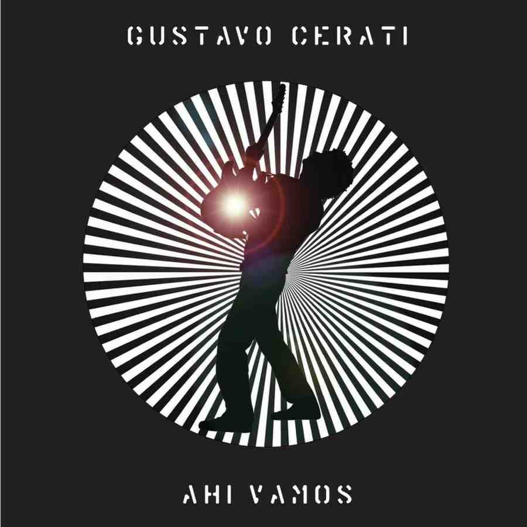
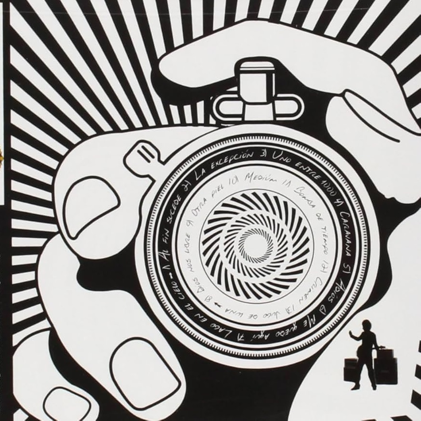
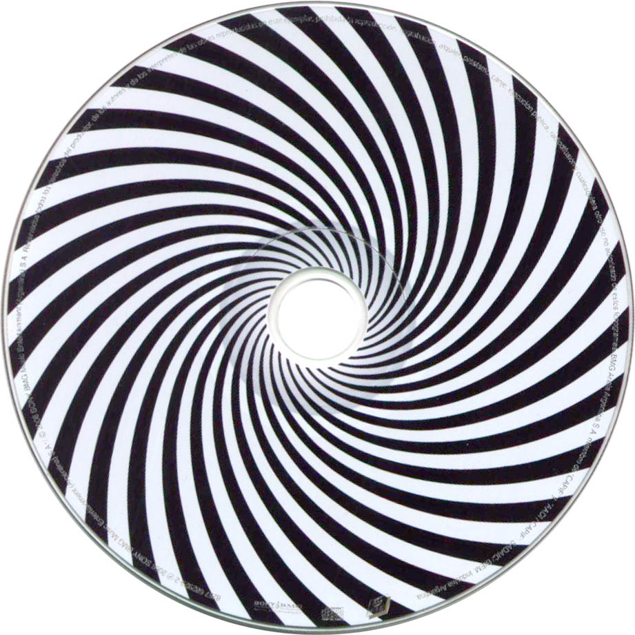

Ahí Vamos



Lanzado el 4 de abril de 2006, marca el regreso de Gustavo Cerati a un sonido más directo y rockero, dominado por guitarras y baterías intensas, y una energía cercana a sus discos en Soda Stereo. Tras la tendencia electrónica de sus trabajos anteriores, el disco representó una reconexión con el rock clásico y melódico que definió gran parte de su carrera.